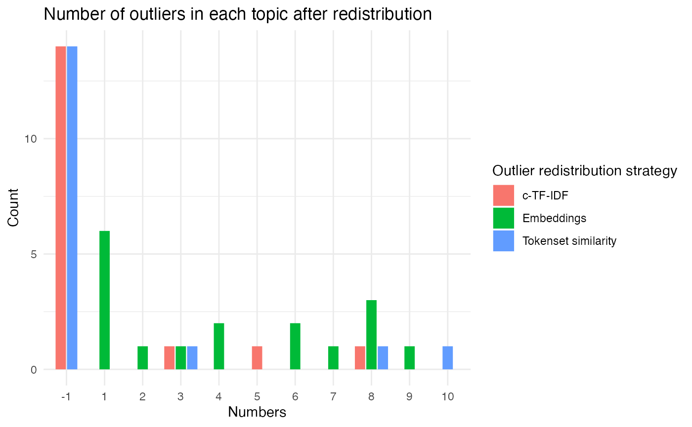

Interacting with individaul modules
modular_approach.RmdModules
- In the Bertopic Python Library by Maarten Grootendorst there are 6 sub-modules:
-
Embeddings - for transforming your documents into a numerical representation
Dimensionality Reduction - for reducing the number of features of the embeddings output
Clustering - finding groups of similar documents to represent as topics
Vectorisers - find the n-grams to describe each topic
c-TF-IDF - create topic-level (rather than document) bag of words matrices for representing topics
Fine-tuning topic representations - other tools for topic representations (includes generative AI/LLMs)

This vignette will show you how to use {BertopicR} to tune each module when creating your topic models.
Data
For demonstrative purposes, we’ll use {stringr}‘s ’sentences’ data set, which comes fairly clean. For help on cleaning text data visit ParseR/LimpiaR documentation. Let’s take a look at the first five posts for brevity.
sentences <- stringr::sentences
sentences[1:5]
#> [1] "The birch canoe slid on the smooth planks."
#> [2] "Glue the sheet to the dark blue background."
#> [3] "It's easy to tell the depth of a well."
#> [4] "These days a chicken leg is a rare dish."
#> [5] "Rice is often served in round bowls."Then we’ll turn the sentences into a data frame:
Embeddings
In order to work efficiently with text data, we need to turn the words into numbers. The current state-of-the-art approach to turning text into numbers, is contextualised word embeddings. We’ll use an MpNet model, ‘all-mpnet-base-v2’ to take our sentences and turn them into numbers (embeddings). This will allow us to find similarities and differences between our sentences, using standard mathematical techniques (don’t worry if this isn’t making sense right now, often the best way to learn is by doing).
In BertopicR you will usually either want to be making or doing with modules, or, compiling or fitting with models. We make components, we do actions on data with components. We compile our components into models, and then we fit our models to data.
Make the embedder
First we’ll make an embedder (or embedding_model) using the
bt_make_embedder function. Then we’ll embed our sentences
using the embedder.
TIP: It’s a good idea to save your embeddings, as when working with many documents this process will be time consuming.
embedder <- bt_make_embedder(
model_name = "all-mpnet-base-v2"
)Do the embedding
embeddings <- bt_do_embedding(
embedder,
df$sentences
)
#>
#> Embedding proccess finished
#> all-mpnet-base-v2 added to embeddings attributes
embeddings[1, 1:10]
#> [1] 0.0031732221 -0.0454455651 -0.0003524857 0.0046989759 0.0179691557
#> [6] -0.0300240256 -0.0278541520 -0.0199615341 -0.0032402743 0.0257827863Each row of our embeddings output represents one of our original sentences, and each column represents a different embedding dimension; there are 768 dimensions outputted by the ‘all-mpnet-base-v2’ mode
We take a peek at the first 10 columns (dimensions), of the first row of our embeddings and we see 10 floating point numbers.
Reducing Dimensions
The next step in the pipeline is to reduce the dimensions of our embeddings, we do this for two reasons:
to allow our clustering algorithm to run smoothly
to visualise our clusters on a plane (we will eventually reduce to 2 dimensions)
In machine learning more generally, dimensionality reduction is often an important step to avoid overfitting and the curse of dimensionality. In this example we will use the UMAP algorithm (however dimensionality reduction using PCA and truncatedSVD are also currently available) for more information on the UMAP algorithm - uniform manifold approximation and projection for dimension reduction - catchy, see UMAP Docs.
TIP: Like with embeddings, it’s a good idea to save your reduced embeddings, as reducing dimensions can be a costly process.
Make the reducer
We’ll use a low-ish value for n_neighbours (we have a small dataset) and an output with 5 dimensions (n_components = 5L). We’ll set the min_distance to 0, so that our dimensionality reduction model can place very similar documents very close together. We’ll set the metric to “Euclidean” see Embedding to non-Euclidean Spaces for alternatives.
reducer <- bt_make_reducer_umap(
n_neighbors = 10L,
n_components = 10L,
min_dist = 0L,
metric = "euclidean"
)Do the reducing
reduced_embeddings <- bt_do_reducing(
reducer, embeddings = embeddings
)
#> UMAP(low_memory=False, min_dist=0, n_components=10, n_neighbors=10, random_state=42, verbose=True)
#> Mon Sep 4 15:13:18 2023 Construct fuzzy simplicial set
#> Mon Sep 4 15:13:19 2023 Finding Nearest Neighbors
#> Mon Sep 4 15:13:19 2023 Finished Nearest Neighbor Search
#> Mon Sep 4 15:13:20 2023 Construct embedding
#> Mon Sep 4 15:13:21 2023 Finished embedding
reduced_embeddings[1:2, ]
#> [,1] [,2] [,3] [,4] [,5] [,6] [,7] [,8]
#> [1,] 5.739700 6.123053 10.222593 5.357183 2.770175 6.529313 7.878425 2.544012
#> [2,] 4.772967 7.098315 8.398382 6.239881 3.431901 7.322098 9.159200 3.022838
#> [,9] [,10]
#> [1,] 6.631907 6.297930
#> [2,] 7.621526 6.564954We’ll take a peek at two of our rows which now represent the reduced dimension embeddings for each document. Notice that our numbers are floating points, but also that they are not bounded between -1 and 1.
The next step is to cluster our data. On a first pass, bertopic considers each discovered cluster a topic. Choice of clustering model and the selected parameters are therefore important. We’ll use an hdbscan cluster, as that’s what bertopic was initially built with.
Clustering
There is a lot to learn when it comes to clustering, and selecting the correct parameters is notoriously difficult - especially when clustering without pre-assigned labels, as most clustering tends to be. For this run we’ll use the hdbscan clustering algorithm, because we don’t know how many clusters we should look for in advance (which we should if using kMeans clustering for exampel).hdbscan documentation
It’s important to know that until you get down to the level of updating topic representations, in the bertopic pipeline 1 topic = 1 cluster. It’s therefore crucial to gather what information you can about your data to inform your clustering process.
Make the clusterer
We’ll stick with a Euclidean distance metric, we’ll reduce the min_cluster_size to 10, giving us a theoretical maximum of number of clusters as: length(sentences) / 10 and min_samples equal to 5. The relationship between min_cluster_size and min_samples is important, it will default to min_samples = min_cluster_size if not specified, but this is likely to have adverse effects on your clustering outputs when dealing with larger datasets (as you’ll likely want to raise the min_cluster_size parameter significantly). On the other hand, the hdbscan documentation claims that min_samples, a parameter inherited from dbscan, does not have such importance in the hdbscan algorithm - though they also say it remains the algorithm’s biggest weakness.
We’ll also set cluster_selection_method = “leaf”, this means we’ll tend to find many small clusters, rather than a few large clusters. This is another parameter which is fraught with danger, to get this right the first time is unlikely, and is likely to require trial and error, at least in the beginning.
clusterer <- bt_make_clusterer_hdbscan(min_cluster_size = 5L,
metric = "euclidean",
cluster_selection_method = "leaf",
min_samples = 3L,
prediction_data = TRUE)Do the clustering
clusters <- bt_do_clustering(clustering_model = clusterer, embeddings = reduced_embeddings) clusters is now a list of cluster labels, we have 720 labels in total - one for each sentence in {Stringr}’s sentences data set. The cluster labels are output as integers, but it’s important not to assume that they work like regular integers do. It’s not necessarily the case that cluster 1 is closer to cluster 4 than it is to cluster 15, the ordering of the labels can effectively be considered random.
As you most likely have no labels or a training/test/validation data set, you will have to rely on inspecting your clusters, remembering that in bertopic 1 cluster = 1 topic. To check whether our clusters make sense, we could draw upon our data analysis & visualisation tool kit, and inspect each cluster against every other. This would soon become intractable. Instead, we’ll take a quick look at the distribution and then we’ll use the bt_compile_model() and bt_fit_model() functions to get our topic models out.
Create a data frame
But first, we’re beginning to acquire a bunch of objects which may become hard to maintain. We can store them in a data frame:
data <- dplyr::tibble(sentence = tolower(sentences)) %>%
mutate(embeddings = list(embeddings),
reduced_embeddings = list(reduced_embeddings),
cluster = as.integer(clusters))If you want to save this data frame, you’ll need to save it as a .Rdata/.rds object, not as a .csv or .xlsx as it contains list columns.
Count the clusters
We can see the distribution via a histogram:
library(ggplot2)
data %>%
filter(cluster != -1) %>%
count(cluster, sort = TRUE) %>%
ggplot(aes(x= n)) +
geom_histogram(fill = "midnightblue", bins = 20) +
theme_minimal() +
xlab("Cluster Size") +
ylab("Number of Clusters")
With the exception of the outlier group, the clusters are labelled in order of size:
data %>%
count(cluster, sort = TRUE)
#> # A tibble: 58 × 2
#> cluster n
#> <int> <int>
#> 1 -1 213
#> 2 0 34
#> 3 1 19
#> 4 2 18
#> 5 3 18
#> 6 4 17
#> 7 5 13
#> 8 6 13
#> 9 7 13
#> 10 8 13
#> # ℹ 48 more rows213/720 (29.6%) of data points were labelled as noise (cluster == -1), and upon a first inspection they do appear to be quite eclectic.
data %>%
filter(cluster == -1) %>%
slice(30:40) %>%
pull(sentence)
#> [1] "the heart beat strongly and with firm strokes."
#> [2] "the hat brim was wide and too droopy."
#> [3] "cut the pie into large parts."
#> [4] "he lay prone and hardly moved a limb."
#> [5] "the fin was sharp and cut the clear water."
#> [6] "oak is strong and also gives shade."
#> [7] "the pipe began to rust while new."
#> [8] "thieves who rob friends deserve jail."
#> [9] "the ripe taste of cheese improves with age."
#> [10] "the hog crawled under the high fence."
#> [11] "split the log with a quick, sharp blow."But how do our other clusters look?
data %>%
filter(cluster == 0) %>%
sample_n(5) %>%
pull(sentence)
#> [1] "a ridge on a smooth surface is a bump or flaw."
#> [2] "crack the walnut with your sharp side teeth."
#> [3] "a stiff cord will do to fasten your shoe."
#> [4] "the stitch will serve but needs to be shortened."
#> [5] "screw the round cap on as tight as needed."
data %>%
filter(cluster == 1) %>%
sample_n(5) %>%
pull(sentence)
#> [1] "the rope will bind the seven books at once."
#> [2] "a list of names is carved around the base."
#> [3] "he wrote down a long list of items."
#> [4] "draw the chart with heavy black lines."
#> [5] "flood the mails with requests for this book."The more clusters we look at, the more difficult it will become to figure out what’s happening…
data %>%
filter(cluster == 2) %>%
sample_n(5) %>%
pull(sentence)
#> [1] "better hash is made of rare beef."
#> [2] "a pot of tea helps to pass the evening."
#> [3] "tea in thin china has a sweet taste."
#> [4] "these days a chicken leg is a rare dish."
#> [5] "a cup of sugar makes sweet fudge."Inspecting each of these clusters and trying to figure out what each cluster means and how they inter-relate would soon become intractable for humans. Thankfully, within BERTopic there are quantitative methods already in place to aid this procedure.
Instead of looking at the individual posts in each cluster, we’ll attempt to summarise their contents with keywords and phrases. In order to this, we’ll make a vectoriser and a ctfidf model. After creating these models, we can use everything we’ve looked at so far to compile a model, fit the model on our data, and finally explore our topics and their representations.
Make the vectoriser
For the vectoriser we’ll set the ngram range as c(1, 2) this means our topics can be represented as single words or bigrams. We’ll set stop_words to ‘english’ so that English stop words are removed and we’ll tell our vectoriser to only consider words that have a frequency of 3 or higher, so that rare words and chance occurrences don’t clog our representations too much. In practice, we will want to set a higher value for min_frequency as we’ll be working with significantly more data.
vectoriser <- bt_make_vectoriser(ngram_range = c(1, 2), stop_words = "english", min_frequency = 3L)Make the ctfidf model
Then we’ll create a ctfidf model which will allow us to represent each topic according to the words that are important to that topic (have high frequency) and distinct to that topic (have relatively low frequency in other topics):
ctfidf <- bt_make_ctfidf(reduce_frequent_words = TRUE, bm25_weighting = FALSE)Compile the model
We’ve already made our individual components, or modules, and
selected their parameters. We’ve already performed the embeddings and
dimensionality reduction, so bertopic allows us to skip these steps
easily by feeding in empty models to the bt_compile_model
function for embedding and reducing. We can also skip clustering, but
won’t for this task as it adds extra complexity, the clustering we
performed above with bt_do_clustering was just to explore how our
clusterer would work in practice.
N.B. In practice you will need to pause and explore your parameters in more depth.
topic_model <- bt_compile_model(
embedding_model = bt_base_embedder(),
reduction_model = bt_base_reducer(),
clustering_model = clusterer,
vectoriser_model = vectoriser,
ctfidf_model = ctfidf
)
#>
#> Model builtFit the model
We feed in our reduced embeddings rather than the original embeddings, this allows us to skip steps in the workflow; this can save us a lot of time, particularly when we have many documents.
bt_fit_model(topic_model, data$sentence, embeddings = reduced_embeddings)We can create a look up table to join our sentences to their topic labels and their topic descriptions and join this information with our original dataframe:
topic_representations <- topic_model$get_topic_info()
topic_rep_lookup <- topic_representations %>%
select(topic = Topic, description = Name, topic_size = Count)
data <- data %>%
mutate(topic = topic_model$topics_) %>%
left_join(topic_rep_lookup)
#> Joining with `by = join_by(topic)`
(data <- data %>%
relocate(sentence, topic, topic_size, description)
)
#> # A tibble: 720 × 7
#> sentence topic topic_size description embeddings reduced_embeddings cluster
#> <chr> <dbl> <dbl> <chr> <list> <list> <int>
#> 1 the birch… -1 213 -1_night_l… <dbl[…]> <dbl [720 × 10]> -1
#> 2 glue the … -1 213 -1_night_l… <dbl[…]> <dbl [720 × 10]> -1
#> 3 it's easy… 43 6 43_pipe_te… <dbl[…]> <dbl [720 × 10]> 39
#> 4 these day… 2 18 2_sweet_ra… <dbl[…]> <dbl [720 × 10]> 2
#> 5 rice is o… 2 18 2_sweet_ra… <dbl[…]> <dbl [720 × 10]> 2
#> 6 the juice… 14 10 14_tree_se… <dbl[…]> <dbl [720 × 10]> 14
#> 7 the box w… 45 5 45_box_squ… <dbl[…]> <dbl [720 × 10]> 50
#> 8 the hogs … -1 213 -1_night_l… <dbl[…]> <dbl [720 × 10]> -1
#> 9 four hour… -1 213 -1_night_l… <dbl[…]> <dbl [720 × 10]> -1
#> 10 a large s… -1 213 -1_night_l… <dbl[…]> <dbl [720 × 10]> -1
#> # ℹ 710 more rowsThe df compiled is a common place for everything we have generated so far, in practice we don’t really need the cluster column now that we have the topic column, they provide the same information. Topics and clusters should have largely the same labels, the only discrepancy would be where multiple clusters/topics are the same size.
Changing the Model Representation
Once you are happy with the topics/clusters that have been formed, there are a few methods we can use to improve the topic representations and get a better understanding of what each topic is about.
The representation methods currently available are:
KeyBERT is a keyword extraction technique that uses BERT embeddings to represent our topics with appropriate keywords and phrases.
MaximalMarginalRelevance is a concept used to select the most relevant keywords or phrases while promoting diversity in keywords. It balances relevance to the topic with distinctiveness from previously chosen keywords or phrases using a trade-off parameter called lambda.
OpenAI allows us to use their available models to generate topic summaries. An OpenAI API key is required to access their api and models.
HuggingFace allows us to use their available models to generate topic summaries. Unlike with OpenAI, you will not need an API key and this is completely free. However, the models are not as sophisticated as some of OpenAI’s.
representation_keybert <- bt_representation_keybert(fitted_model = topic_model,
documents = sentences,
document_embeddings = embeddings,
embedding_model = embedder,
top_n_words = 10,
nr_repr_docs = 50,
nr_samples = 500,
nr_candidate_words = 100)
representation_mmr <- bt_representation_mmr(fitted_model = topic_model,
embedding_model = embedder,
diversity = 0.5)
representation_openai <- bt_representation_openai(fitted_model = topic_model,
documents = sentences,
openai_model = "gpt-3.5-turbo",
nr_repr_docs = 10,
chat = TRUE,
api_key = "sk-")
representation_hf <- bt_representation_hf(fitted_model = topic_model,
documents = sentences,
task = "text2text-generation",
hf_model = "google/flan-t5-base",
default_prompt = "keywords")Now that we have trialed a few representation methods, we can look at how they compare to default representations and we should be able to get a good idea of what each topic is about. You will notice that the gpt-3.5 model gives the most coherent topic representation and it would be easy to just take that as gospel and chose a topic title based on that. It is important to remember, like with the other representation methods, only the number you input for nr_repr_docs in bt_representation_openai has been sent to the model and for a large topic, these documents may not represent the topic as a whole.
Modifying Topics
Merging Topics
Particularly when using hdbscan we can end up with a large number of topics and it can be useful to merge some of these topics which we think are suitably similar. We can get a certain idea about this from the topic descriptions that we have already generated, but it can also be useful to look at the data more closely before merging.
Hierarchical Clustering
Hdbscan clustering forms clusters through a hierarchical processes which you can visualise with a dendrogram. This can be useful when merging topics as you can see how clusters split to become the topics that emerged from our topic modelling process. The x-axis here is a measure of the distance between topic embeddings, so when clusters split at a higher x-value there is a larger distance between their embeddings. We can see that for this particular dataset, the clusters split into their final topics quite early on in the hierarchy and so it might not be appropriate to merge topics based on how they have emerged in the hierarchy.
hierarchical_topics <- topic_model$hierarchical_topics(sentences)
topic_model$visualize_hierarchy(hierarchical_topics = hierarchical_topics)$show()#>
0%| | 0/56 [00:00<?, ?it/s]
100%|##########| 56/56 [00:00<00:00, 554.60it/s]
100%|##########| 56/56 [00:00<00:00, 554.05it/s]The hierarchical structure is based on how topics emerge based on the similarity of their embeddings, however, we can often find topics that we think should be merged based on our own knowledge. For example, despite their embeddings having a relatively large distance between them, topic 2 and 14 both appear to be about food.
topic_representations %>%
filter(Topic %in% c(2,14))
#> Topic Count Name
#> 1 2 18 2_sweet_rare_covered_far
#> 2 14 10 14_tree_sent_knife_ice
#> Representation
#> 1 sweet, rare, covered, far, cup, comes, china, bowl, food, drink
#> 2 tree, sent, knife, ice, lack, cut, kept, makes, used, fine
#> keybert
#> 1 brown_food_bowl_taste_round_drink_covered_cup_hot_old
#> 2 ice_knife_kept_tree_used_cut_makes_lack_fine_sent
#> mmr
#> 1 cup_china_bowl_drink_food_covered_rare_far_comes_sweet
#> 2 knife_ice_cut_sent_used_kept_makes_fine_lack_tree
#> flanT5
#> 1 china tea bowl with a cup of tea
#> 2 ice knifeFor larger topics we could use ParseR to analyse topic bigrams here, but since these topics are relatively small, we can just examine exemplars.
data %>%
filter(topic %in% c(2,14)) %>%
select(sentence, topic)
#> # A tibble: 28 × 2
#> sentence topic
#> <chr> <dbl>
#> 1 these days a chicken leg is a rare dish. 2
#> 2 rice is often served in round bowls. 2
#> 3 the juice of lemons makes fine punch. 14
#> 4 a pot of tea helps to pass the evening. 2
#> 5 a cup of sugar makes sweet fudge. 2
#> 6 the fruit peel was cut in thick slices. 14
#> 7 a pound of sugar costs more than eggs. 2
#> 8 he ordered peach pie with ice cream. 14
#> 9 the fruit of a fig tree is apple shaped. 14
#> 10 fruit flavors are used in fizz drinks. 14
#> # ℹ 18 more rowsI am pretty happy that these two topics could be merged into a larger “food” topic, to do this we use the bt_merge_topics function:
bt_merge_topics(fitted_model = topic_model,
documents = sentences,
topics_to_merge = list(2, 14))We have been maintaining a dataframe all along that is tracking each step we’ve completed, it would be good to now update that dataframe with our new topics.
Reducing Outliers
One feature of hdbscan is the outlier category, which can be quite large. Sometimes we might want to redistribute these outlier documents so that they fall within one of the existing topics. There are a number of methods to achieve this and it is good practice to look at different parameters and different methods when reducing outliers as it can be quite difficult to redistribute outlier documents while maintaining clarity within your topics. To this end, you should consider project goal is before implementing any of these methods, it is more important to have concise and coherent topics or to force most/all of your documents into topics, is it a balance of the two?
The methods currently available to us are:
Tokenset Similarity: Divides each documents into tokensets and calculates the c-TF-IDF cosine similarity between each tokenset and each topic. The summation of each cosine similarity score for each topic across each outlier document gives the most similar topic for each outlier document.
Embeddings: Measures the cosine similarty between embeddings for each outlier document and each topic. If we have passed an empty embedding model to bt_compile_model (which we did), we must specify an embedding model to be used with this function.
c-TF-IDF: Calculates the c-TF-IDF cosine similarity for each outlier document and topic and redistributes outliers based on the topic with which it has the highest similarity.
We can play with all outlier strategies as, unlike when we merge topics or fit the model, the bt_outlier_* functions do not update the model, they only output a df with each document, their current topic classification and the potential new topics. We must update the model using bt_update_topics to actually change the topics within the model.
outliers_ts_sim <- bt_outliers_tokenset_similarity(fitted_model = topic_model,
documents = sentences,
topics = topic_model$topics_,
threshold = 0.1)
outliers_embed <- bt_outliers_embeddings(fitted_model = topic_model,
documents = sentences,
topics = topic_model$topics_,
embeddings = reduced_embeddings,
embedding_model = embedder,
threshold = 0.1)
outliers_ctfidf <- bt_outliers_ctfidf(fitted_model = topic_model,
documents = sentences,
topics = topic_model$topics_,
threshold = 0.1)It would be useful now to look at how each method has redistributed the outlier topics. The graph below shows how outliers have been redistributed to topics below topic 12. You can see how each strategy does not redistribute topics in the same way, the embedding strategy for example, has found that 6 outlier documents are best represented by topic 1, while no other strategy has found any outlier documents that are best represented by topic 1. The embedding method has also redistributed all outlier documents, while the c-TF-IDF and tokenset similarity methods have left certain documents as outliers. This is where playing around with the threshold parameter, to find a good fit for your data and chosen strategy, is important.
data %>%
mutate(outliers_ts_sim = outliers_ts_sim$new_topics,
outliers_embed = outliers_embed$new_topics,
outliers_ctfidf = outliers_ctfidf$new_topics) %>%
filter(merged_topics == -1,
outliers_ctfidf < 12,
outliers_embed < 12,
outliers_ts_sim < 12) %>%
select(outliers_ts_sim, outliers_embed, outliers_ctfidf) %>%
pivot_longer(everything(), names_to = "outlier_distribution_strategy", values_to = "topic") %>%
ggplot(aes(x = as.factor(topic), fill = outlier_distribution_strategy)) +
geom_bar(position = position_dodge2(preserve = "single")) +
theme_minimal() +
labs(x = "Numbers",
y = "Count",
title = "Number of outliers in each topic after redistribution",
fill = "Outlier redistribution strategy") +
scale_fill_discrete(labels = c(outliers_ctfidf = "c-TF-IDF",
outliers_embed = "Embeddings",
outliers_ts_sim = "Tokenset similarity"))
You should take a look at some of the documents which have been redistributed and the topic which they have been redistributed to before deciding on the best strategy for your data. This can be quite laborious for large amounts of data with many topics. As this dataset is relatively small it may not be appropriate, but you can use things like bigrams and top terms on outlier documents that have been redistributed to investigate if they line up with the topics they have been moved to.
Once you have settled on a new list of topics that you are happy with, we can update the dataframe we have been keeping. For example, if after looking at the data we decided that the Tokenset Similarity method was the most appropriate:
data <- data %>%
mutate(new_topics = outliers_ts_sim$new_topics)
data %>%
filter(merged_topics == -1) %>%
select(merged_topics, new_topics)
#> # A tibble: 213 × 2
#> merged_topics new_topics
#> <int> <dbl>
#> 1 -1 -1
#> 2 -1 32
#> 3 -1 -1
#> 4 -1 50
#> 5 -1 31
#> 6 -1 8
#> 7 -1 27
#> 8 -1 -1
#> 9 -1 53
#> 10 -1 37
#> # ℹ 203 more rowsIf you will be using your model in the future, you can also update your model with those new topics.
bt_update_topics(fitted_model = topic_model,
documents = sentences,
new_topics = outliers_ts_sim$new_topics)And that’s it! You’ve completed a basic topic modelling pipeline using bertopic! If you would like to have a deeper look at what else we can do using bertopic, refer to the BertopicR function documentation and the BERTopic python library, https://maartengr.github.io/BERTopic/index.html.